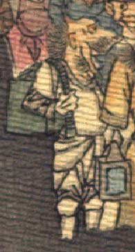

鬼。頭頂に角が1本生えている。目玉は小さく、大きな口を開けている。白い服を身に着け、緑色の笈のようなものを背負っている。
著作者：J.Dautremer／出典：親書誌：U426_nichibunken_0123：Le vieillard et les démons／日付：2006／資源識別子：U426_nichibunken_0123_0002_0012
Copyright (c)2010- International Research Center for Japanese Studies, Kyoto, Japan. All rights reserved.